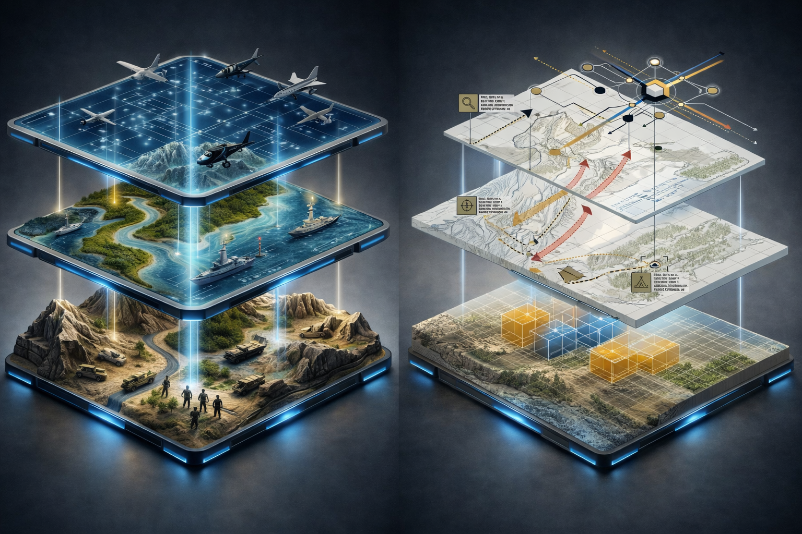
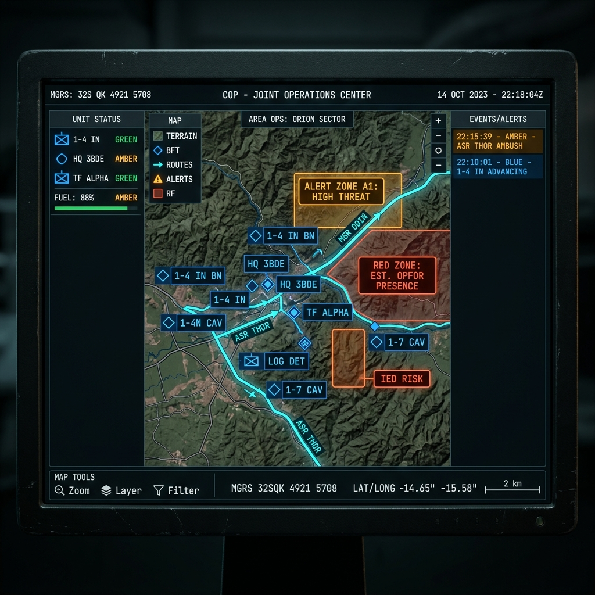

NEXXO C2 ACTIVO
El centro de mando digital. Un panel único que integra todas las fuentes de inteligencia sobre el mapa geoespacial de Colombia para construir la Imagen Operacional Común (COP).

RADAR transforma datos crudos de múltiples sensores y fuentes de inteligencia en una imagen operacional clara, precisa y accionable para el comandante.

NEXXO C2 // RADAR — COMMON OPERATING PICTURERADAR proporciona una visión 360° del teatro de operaciones colombiano en una sola interfaz.
Mapa de Colombia con capas topográficas, hidrográficas y de infraestructura crítica. Zoom desde nivel nacional hasta nivel táctico de unidad. Integración con Mapbox GL JS para renderizado vectorial de alto rendimiento.
Seguimiento simultáneo de activos terrestres (blindados, infantería), navales (fragatas, lanchas fluviales) y aéreos (Black Hawk, OV-10, UAVs). Cada activo reporta posición GPS, velocidad y rumbo.
Panel lateral con telemetría de cada unidad: nivel de combustible, municiones disponibles, estado operacional, último reporte. Actualización en tiempo real vía WebSockets con latencia inferior a 2 segundos.
Alertas automáticas desde fuentes institucionales: IDEAM (eventos climáticos), MinDefensa, ARMADA_COL e INTEL_DIV. Clasificación por prioridad y zona geográfica de impacto.
Autenticación JWT con control de acceso por rol y nivel de clasificación. Cada acción del operador queda registrada: consultas, zoom, selección de unidades, exportación de datos.
Representación detallada de los teatros de operaciones clave: Catatumbo, Bajo Cauca, Pacífico Nariñense, Frontera con Ecuador. Cada zona con nivel de riesgo y densidad de unidades desplegadas.
Agenda una demostración del dashboard táctico con datos simulados del teatro de operaciones colombiano.